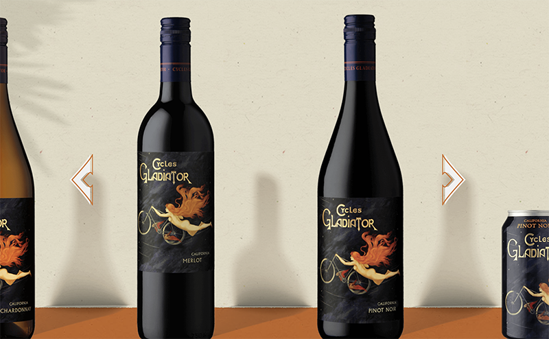
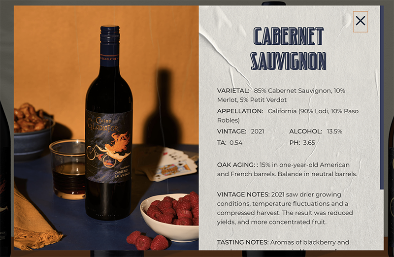
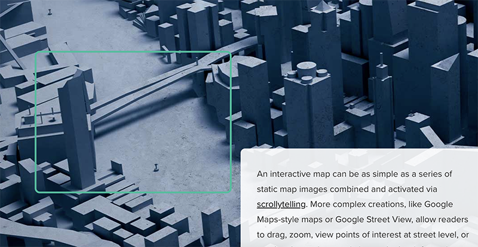

Comparative Analysis


One website I found was cyclesgladiator.com. I liked the overall design aesthetic of this website, as well as the interactive features. One feature that stood out to me was the ability for the user to scroll sideways through all the wine selections. The user is able to click on each wine bottle to open an overlay that displays details about the selected wine.

Another website I found was shorthand.com. The feature I liked about this site was how the viewport zoomed in as the user scrolled down the page. I liked this feature because I was hoping to incorporate zooming viewports into my seal project. I liked the combination of parallax scrolling and a moving viewport that this website utilizes.